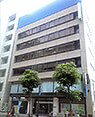

レンタルオフィス一覧｜個室のレンタルオフィスならOpenoffice：東京・大阪をはじめ全国に50拠点以上
南青山
青山セントラル
乃木坂/ 青山一丁目
赤坂ビジネス プレイス
赤坂見附
溜池山王/ 虎ノ門
麻布十番
日本橋セントラル
日本橋箱崎
渋谷hills
渋谷神南
品川シーサイドイーストタワー
大崎駅西口
西新宿駅前
池袋
神保町
西新橋
大門駅前
三田国際ビル
立川駅南
五反田駅西口
本厚木駅前
横浜金港町
大宮駅西口
水戸

名古屋丸の内
名古屋伏見
刈谷
豊田
丸の内伏見通
京阪淀屋橋
京都烏丸
京都河原町御池
名駅南
御堂筋
新大阪北
大阪平野町
西阪急梅田
大阪福島
神戸三宮南
札幌南
仙台青葉通り
仙台駅前
郡山駅前1丁目
新潟
長野駅善光寺口
広島大手町
高松
博多駅前通り
西鉄久留米駅前
小倉
大分
熊本銀座通り